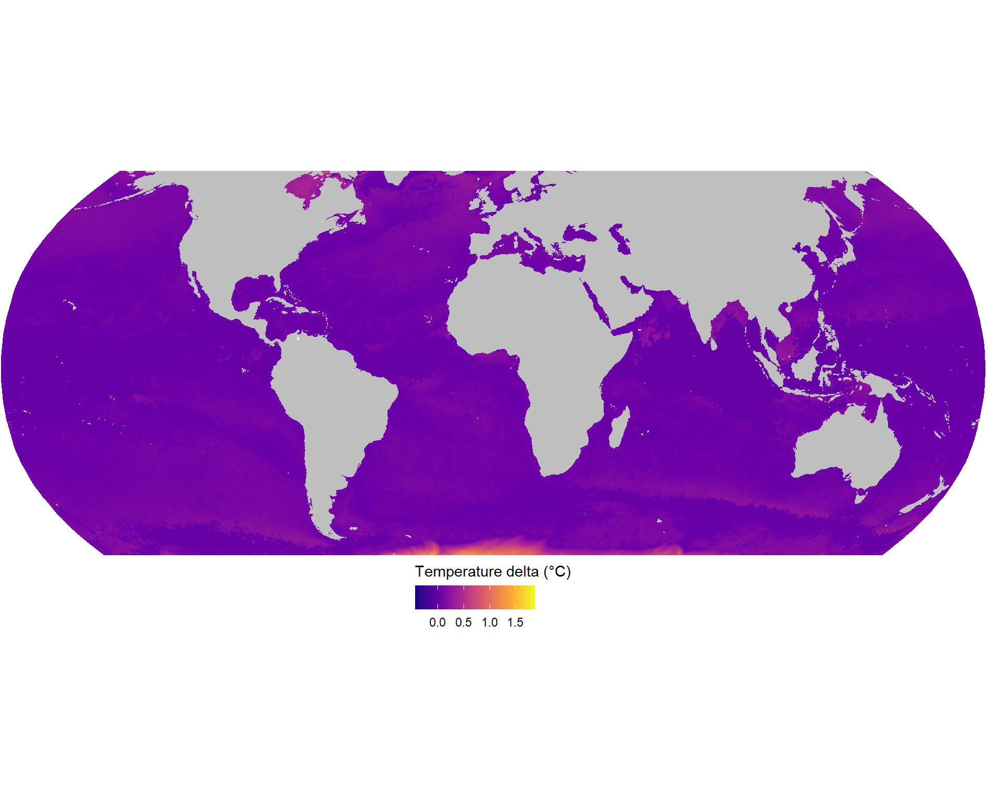

Caracterización ambiental global OISST
1 Descripción
Se descargaron los datos de Raynolds (OISST) diarios desde 1981 hasta 2021 en formato netCDF (un archivo por año).
Se unieron todos los los netCDF en uno solo utilizando el programa CDO.
Se estimaron cada uno de los estadísticos utilizando el paquete raster.
2 Temperatura promedio

3 Desviación Estandar
4 Amplitud
Definido como el valor máximo menos el valor mínimo de la series historica
5 Curtosis
La curtosis es una estadística que determina el grado de concentración de los valores de una variable en torno al centro de la distribución de frecuencias.
Una distribución normal tiene un valor de curtosis de 3
null device
1 6 Asimetria (Skewness)
7 Bimodalidad
La prueba de Hartigan (Hartigan´s DIP test) se puede definir como: “The dip test measures multimodality in a sample by the maximum difference, over all sample points, between the empirical distribution function, and the unimodal distribution function that minimizes that maximum difference”
La prueba resulta en un valor estadístico (DIP value) y un valor de significancía. De acuerdo al autor de la prueba, un valor de significancia menor a 0.05 indica una bimodalidad significativa, valores mayores de 0.05 pero menores de 0.10 sugieren una bimodalidad con significancia marginal.
un valor P cercano a 0 indican que la serie de tiempo es AL MENOS bimodal
8 Descripcion de series de tiempo como ejemplo
8.1 ubicación de los puntos

8.2 histogramas de frecuencia
